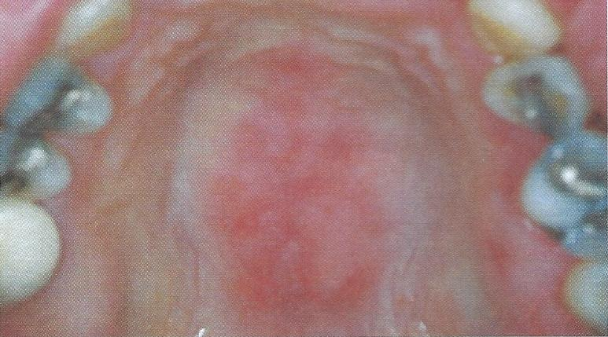

Lupus erythematosus
รอยโรคในช่องปากของโรคลูปัสอีรีธีมาโตซัส
พบในผู้ป่วยภูมิต้านทานต่อเนื้อเยื่อตนเอง
ลักษณะทางคลินิก แบบ discoid lesions
พบเป็นแผล โดยเป็นรอยแดงตรงกลางร่วมกับมีรอยเส้นสีขาวกระจายออกจากรอยโรค
พบรอยโรคที่กระพุ้งแก้ม เหงือก และlabial mucosa
ส่งต่อทันตแพทย์เพื่อ biopsy